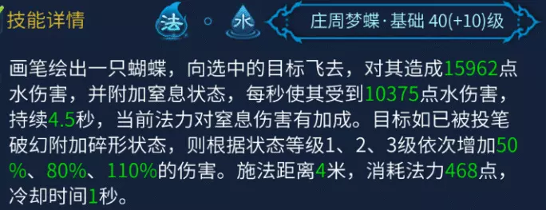
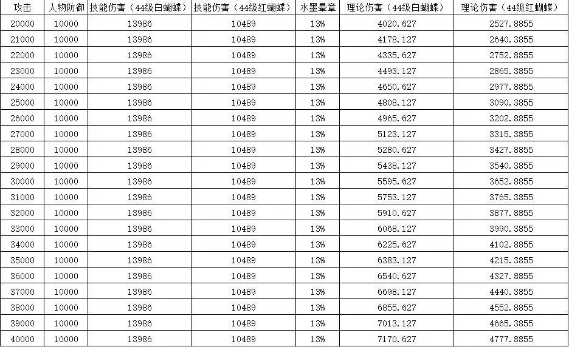
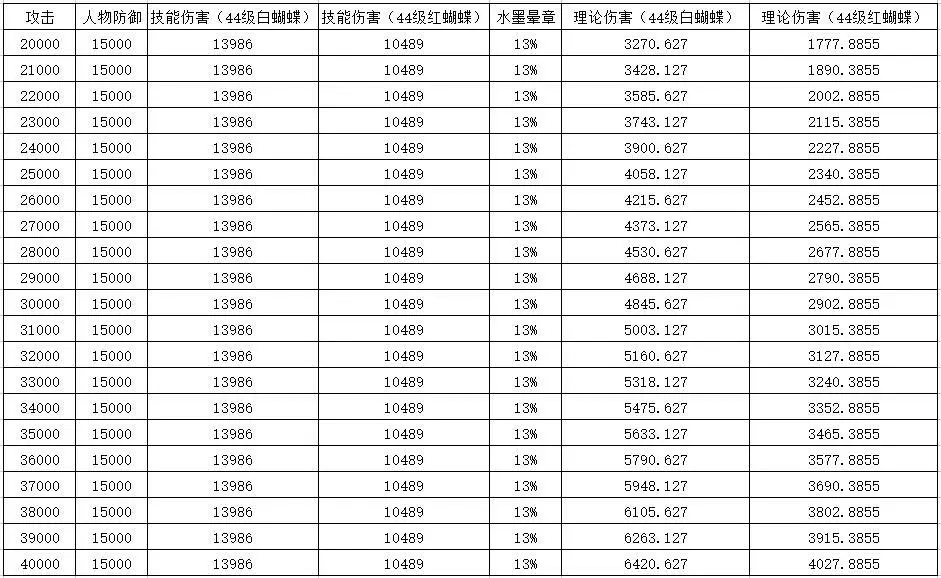
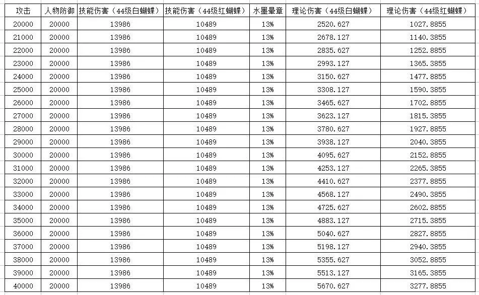
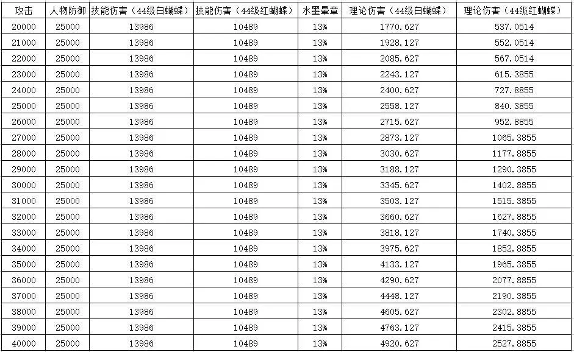
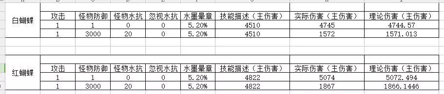
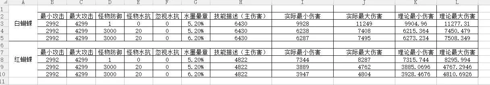
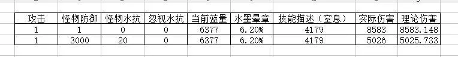

画魂蝴蝶伤害测试
作者：[小黑猪]
本文主要涉及内容如下：
水墨晕章(bug修复后)的加成方式
庄周梦蝶(基础)攻击计算公式
庄周梦蝶(丹朱)攻击计算公式
庄周梦蝶(基础)与庄周梦蝶(丹朱)的比较
水墨晕章(bug修复后)的加成方式
水墨晕章的 水攻击提升一定百分比，目前经测试以后，是只针对技能描述中的水攻击(或者词条增加的水攻击)进行加成。

上图是50级基础色蝴蝶的技能描述，假设我们水墨晕章的加成量是13%，那么通过水墨晕章提升的水攻击就是：
15962*13%=2075.06(基础部分)
10375*13%=1348.75(窒息部分)
换句话说，水墨晕章不提升面板攻击，也不提升由于蓝量而提升的窒息攻击。
因此，对于水墨晕章这技能来说，如果自身蝴蝶等级不够高，效果是不明显的。
庄周梦蝶(基础)攻击计算公式
庄周梦蝶(基础)攻击力=面板攻击*1.05+技能描述*(1+水墨晕章加成)
Warning
注意：该公式得出的结果，只是庄周梦蝶(基础)的攻击力，如果要得到最终伤害，还需要计算对方防御、减伤、水抗，以及PVP伤害系数等
庄周梦蝶(丹朱)攻击计算公式
庄周梦蝶(丹朱)攻击力=面板攻击*0.75+技能描述*(1+水墨晕章加成)
Warning
注意：其实蝴蝶攻击应包含窒息部分，但由于该部分尚未测出(楼主我也不想去测了，太麻烦了)，目前根据已测出的数据，窒息的攻击模型如下：
窒息攻击=面板攻击*某待定系数+技能描述*(1+水墨晕章加成)+当前蓝量*0.65
实际测试的时候，由于不断变化的蓝量，而造成了不断变化的窒息攻击，而难以进行测试
庄周梦蝶(基础)与庄周梦蝶(丹朱)的比较
两者的关系，其实已经有不少人分析过了，在这里，我也不想过多进行分析，只请各位看点数据，希望能对大家有一定的启发
   
上表格中的数据，并没有考虑碎形、水抗、致命等影响，因为这些因素的影响，并不会导致红白伤害比例的变化。
在看这个表格的时候，我们其实只需要将红蝴蝶能中几个，以及红白蝴蝶窒息伤害的差值考虑进去即可。
从上面几组数据中可以看出，当攻防差距越大时，其实红蝴蝶的伤害优势越明显。大多数情况下，能保证红蝴蝶3中2，就已经略有优势，而且吧，红蝴蝶还是个群伤，不管是在副本还是在团战中，都会有明显的优势，唯一不足的就是弹道攻击并非所有画魂玩家都能适应。
接下来是测试部分，请非战斗人员迅速撤离了吧
我先简单描述一下测试原理。
第一步建立公式模型。
根据以往测试结果，建立两个公式模型：
1. 蝴蝶攻击=(面板攻击*系数a+技能描述*系数b)*(1+水墨晕章)
2. 蝴蝶攻击=(面板攻击*系数a+技能描述*系数b*(1+水墨晕章))
第二步测定系数b。
通过甲士河谷震和司怪困，将面板攻击降低为1-1，那么面板攻击*系数a，可近似为1，则有
(1+技能描述*系数b*(1+水墨晕章)-家园傀儡防御)*(1-水抗减伤百分比)=伤害值
则可计算出系数b的值
第三步确定系数a与公式模型
通过甲士司怪，将面板攻击降低至一个比较狭窄的范围(测试中的攻击范围为：2992-4299)，记录家园傀儡伤害出现的最小值与最大值，并假定系数a，来与理论模型值进行比较，如果实际伤害超出理论范围，则说明系数a不合理，应调整系数a；如果无论如何都无法得到合理的系数a，则判断公式模型存在问题，调整公式模型，并重新假定系数a，直到满足以下条件
实际伤害在理论伤害范围之内
实际伤害十分接近于理论伤害
验证多组数据，都满足以上2个条件
以下则为测试结果

此处测出系数b为1

此处确定公式模型，测出白蝴蝶系数a为1.05，红蝴蝶系数a为0.75

这是对窒息伤害进行的测试，说明窒息伤害的系数b为1，并验证了每1点当前蓝量增加0.65攻击，且证明了水墨晕章并不加成当前蓝量造成的窒息攻击增加